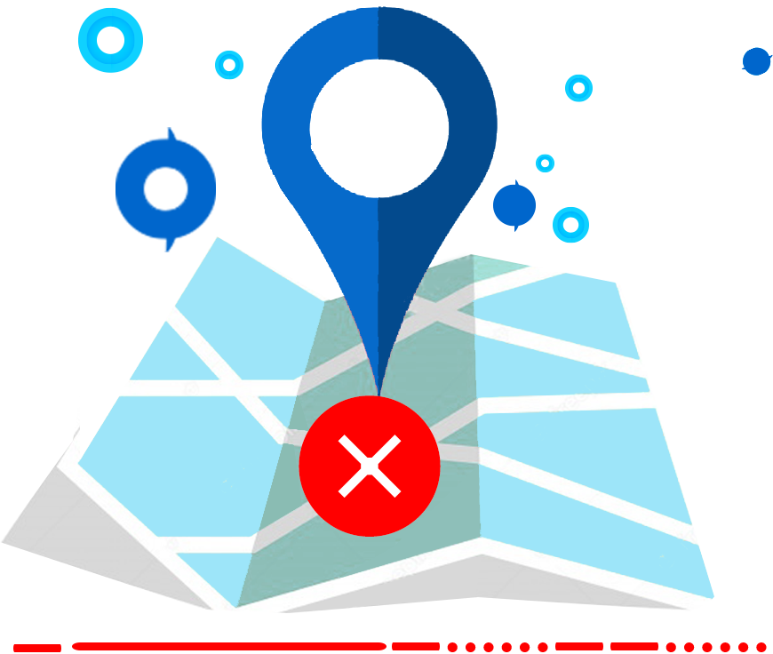

<ion-header>
  <ion-toolbar color="primary" style="height:48px">
    <ion-buttons slot="start" *ngIf="showMenu">
      <ion-menu-button></ion-menu-button>
    </ion-buttons>
    <ion-icon slot="start" class="commonHeaderMyBackArrow"  *ngIf="!showMenu" (click)="goBack()" name="chevron-back"></ion-icon>
    <ion-title>{{'ALERT_TEXT.MY_ATTENDANCE_LOCATION' | translate}}</ion-title>
  </ion-toolbar>
  <ion-toolbar color="primary">
    <ion-searchbar  style="    padding: 2px;height: 45px;" color="light" mode="ios" (ionChange)="filterTechnologies($event)" (ionClear)="onCancel()" (ionCancel)="onCancel()" class="animated fadeIn delay-1s" placeholder="Search">
    </ion-searchbar>
  </ion-toolbar>
</ion-header>

<ion-content>
  <ion-refresher (ionRefresh)="doRefresh($event)" slot="fixed">
    <ion-refresher-content></ion-refresher-content>
  </ion-refresher>

  <ion-card *ngFor="let item of myAttendanceLocationListCone">
    <ion-item lines="none" (click)="openMap(item)">
      <ion-icon class="locate-icon" name="locate-outline" slot="start"></ion-icon>
      <ion-label class="apt-center-title">{{item.LocationName}}</ion-label>
      <ion-icon color="primary" name="location-outline" slot="end"></ion-icon>
    </ion-item>
  </ion-card>

  <ion-row style="height: 100%; width: 100%; display: flex; justify-content: center; align-items: center;" *ngIf="myAttendanceLocationListCone.length == 0 && loadingFinished">
    <ion-col size="12" size-sm size-md>
      
      <div style="display: grid;text-align: center;">
        <ion-label class="empty_title">{{'EMPTY.NO_GEO_LOCATION_TITLE' | translate}}</ion-label>
        <div class="empty_line">________</div>
        <ion-text class="empty_desc">{{'EMPTY.NO_GEO_LOCATION' | translate}}</ion-text>
      </div>
  </ion-col>
  </ion-row>
</ion-content>
